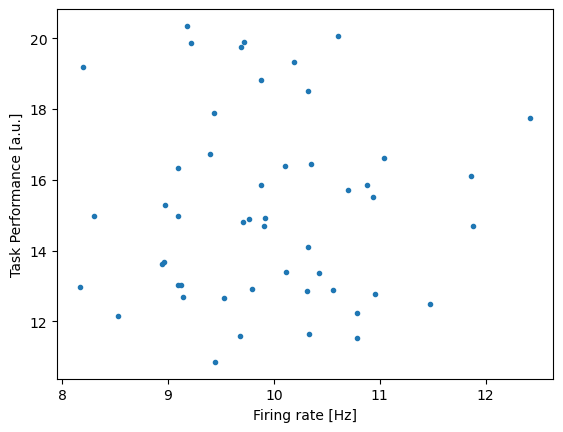
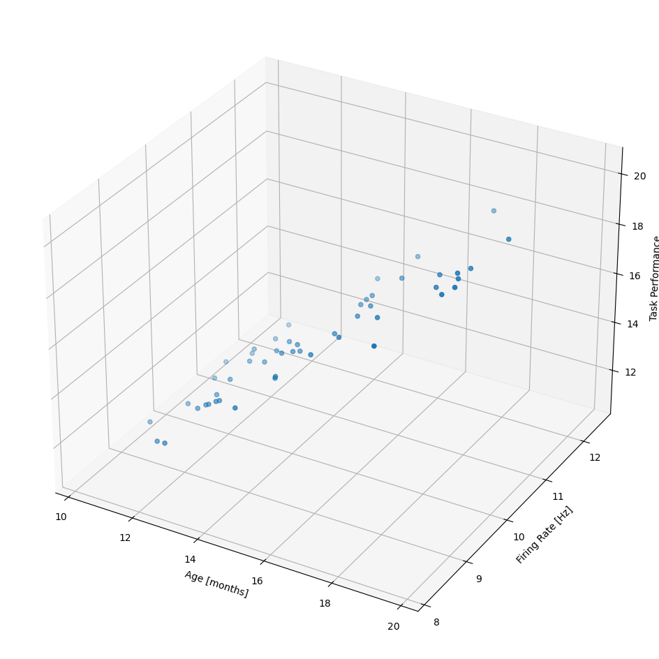
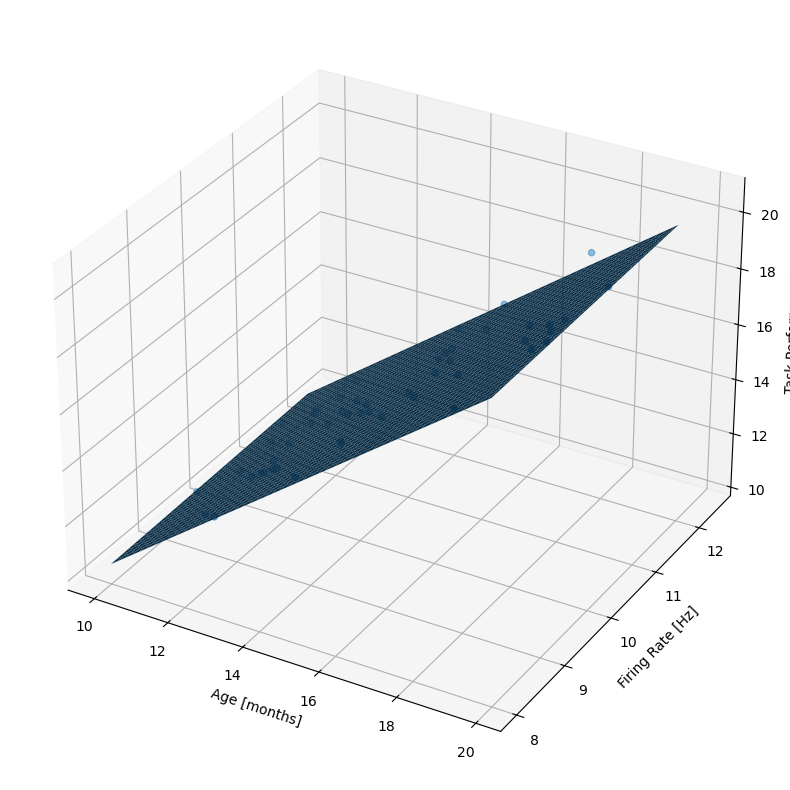

# Load modules
import numpy as np
import matplotlib.pyplot as plt
import pandas as pd
from scipy.stats import pearsonr
import statsmodels.api as smPart 2 with confound
df = pd.read_csv("https://raw.githubusercontent.com/Mark-Kramer/BU-MA665-MA666/master/Data/regression_example_data.csv")
# Extract the variables from the loaded data
task_performance = np.array(df.iloc[:,0]) #Get the values associated with the first column of the dataframe
firing_rate = np.array(df.iloc[:,1]) #Get the values associated with the second column of the dataframe# Plot it ...
plt.figure()
plt.plot(firing_rate, task_performance, '.')
plt.xlabel('Firing rate [Hz]')
plt.ylabel('Task Performance [a.u.]')
plt.show()
N = np.size(firing_rate)
x = firing_rate - np.mean(firing_rate)
y = task_performance - np.mean(task_performance)
sigma_x = np.std(x) #Standard deviation of x
sigma_y = np.std(y) #Standard deviation of y
correlation = (1/N) * (1/sigma_x) * (1/sigma_y) * np.sum(x*y)
print(correlation)from statsmodels.formula.api import ols
data = {"x": firing_rate, "y": task_performance}
res1 = ols("y ~1 + x", data=data).fit()
res1.summary()# Get model prediction.
fitted_values = res1.fittedvalues
# Sort x values for better plotting of the regression line
x_sorted = np.sort(firing_rate)
fitted_sorted = np.sort(fitted_values)
# Plot the regression line (fitted model)
plt.figure()
plt.scatter(firing_rate,task_performance)
plt.plot(x_sorted, fitted_sorted, label="Fitted Model", color="red")
plt.xlabel('Firing rate [Hz]')
plt.ylabel('Task Performance [a.u.]')
plt.show()df = pd.read_csv("https://raw.githubusercontent.com/Mark-Kramer/BU-MA665-MA666/master/Data/regression_example_data.csv")
# Extract the variables from the loaded data
task_performance = np.array(df.iloc[:,0])
firing_rate = np.array(df.iloc[:,1])
age = np.array(df.iloc[:,2])N = np.size(firing_rate)
x = age - np.mean(age)
y = task_performance - np.mean(task_performance)
sigma_x = np.std(x) #Standard deviation of x
sigma_y = np.std(y) #Standard deviation of y
correlation = (1/N) * (1/sigma_x) * (1/sigma_y) * np.sum(x*y)
print(correlation)0.9991206540153563fig = plt.figure(figsize=(12, 12))
ax = fig.add_subplot(projection='3d')
ax.scatter(age, firing_rate, task_performance)
ax.set_xlabel('Age [months]')
ax.set_ylabel('Firing Rate [Hz]')
ax.set_zlabel('Task Performance');
plt.show()
from statsmodels.formula.api import ols
data = {"firing_rate": firing_rate, "age": age, "y": task_performance}
# Write the model and print out the summary
res2 = ols("y ~1 + firing_rate + age", data=data).fit()
res2.summary()| Dep. Variable: | y | R-squared: | 0.999 |
| Model: | OLS | Adj. R-squared: | 0.998 |
| Method: | Least Squares | F-statistic: | 1.584e+04 |
| Date: | Thu, 16 Oct 2025 | Prob (F-statistic): | 3.25e-67 |
| Time: | 12:49:24 | Log-Likelihood: | 43.823 |
| No. Observations: | 50 | AIC: | -81.65 |
| Df Residuals: | 47 | BIC: | -75.91 |
| Df Model: | 2 | ||
| Covariance Type: | nonrobust |
| coef | std err | t | P>|t| | [0.025 | 0.975] | |
| Intercept | 0.0656 | 0.178 | 0.368 | 0.714 | -0.293 | 0.424 |
| firing_rate | 0.0466 | 0.016 | 2.961 | 0.005 | 0.015 | 0.078 |
| age | 0.9977 | 0.006 | 177.974 | 0.000 | 0.986 | 1.009 |
| Omnibus: | 1.418 | Durbin-Watson: | 1.801 |
| Prob(Omnibus): | 0.492 | Jarque-Bera (JB): | 0.739 |
| Skew: | 0.260 | Prob(JB): | 0.691 |
| Kurtosis: | 3.292 | Cond. No. | 218. |
Notes:
[1] Standard Errors assume that the covariance matrix of the errors is correctly specified.
# Plot the mean model fit.
# First, plot the data.
fig = plt.figure(figsize=(10, 10))
ax = fig.add_subplot(projection='3d')
ax.set_xlabel('Age [months]')
ax.set_ylabel('Firing Rate [Hz]')
ax.set_zlabel('Task Performance')
ax.scatter(age, firing_rate, task_performance)
# Then, define model parameter estimates.
# REPLACE THESE VALUES WITH YOUR PARAMETER ESTIMATES
alpha = 0.0656
beta_1 = 0.0466
beta_2 = 0.9977
# Finally, plot the model fit.
x = np.arange(8, 12, 0.1) # Firing rate
y = np.arange(10,20, 0.1) # Age
xx, yy = np.meshgrid(x, y) # Two dim coordinates
zz = alpha + beta_1*xx + beta_2*yy # Model predictions
ax.plot_surface(yy,xx,zz);
plt.show()